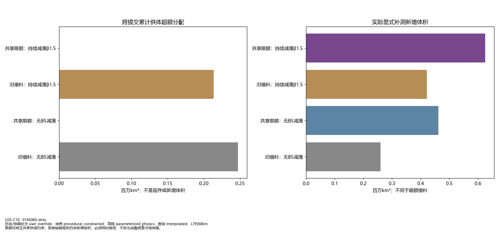
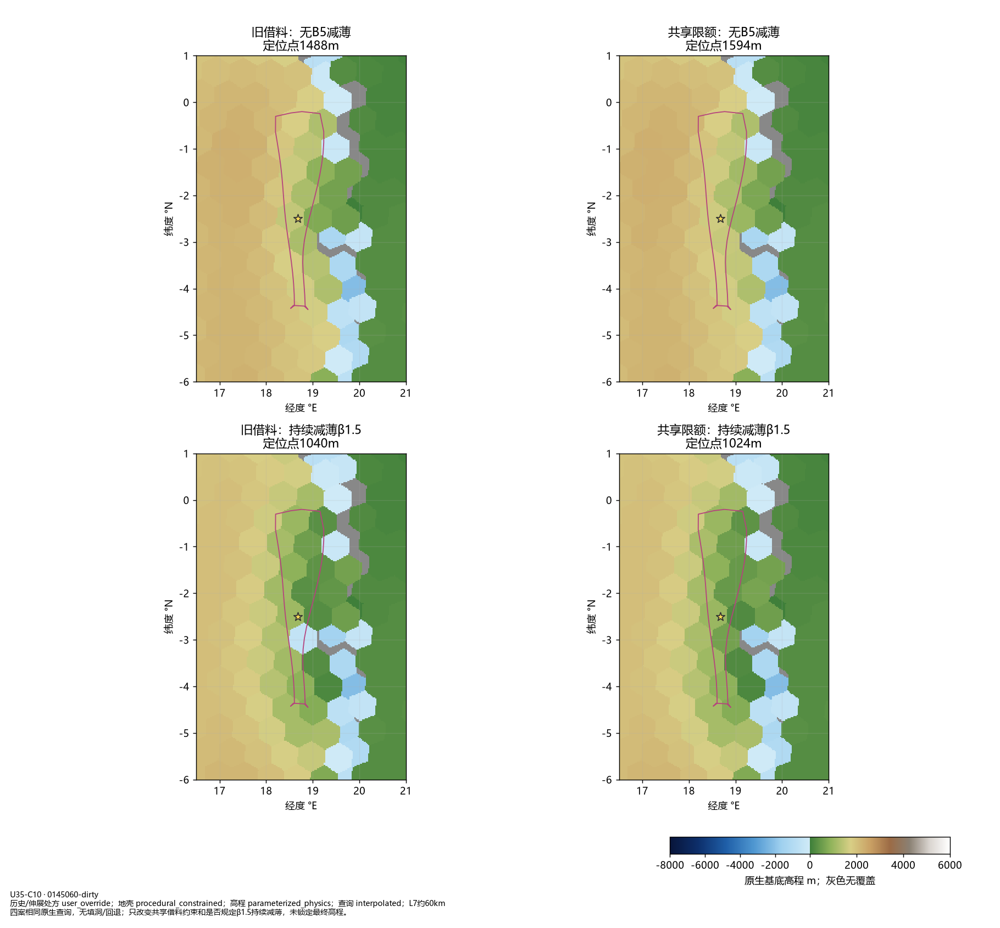
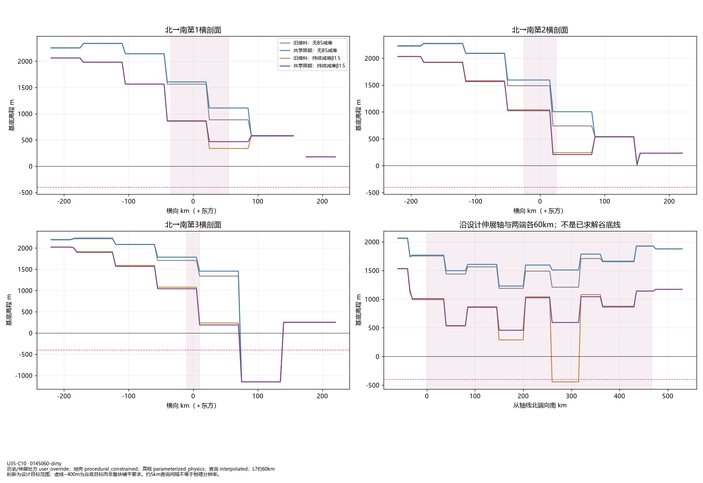
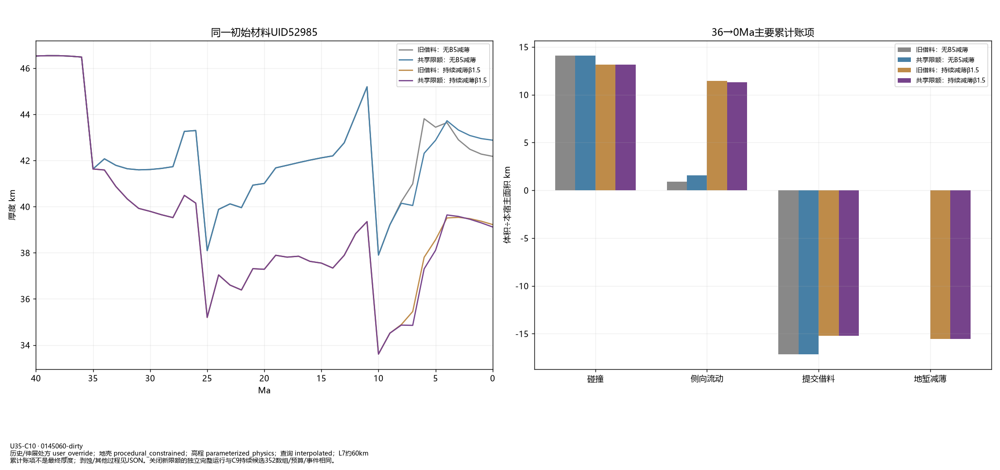
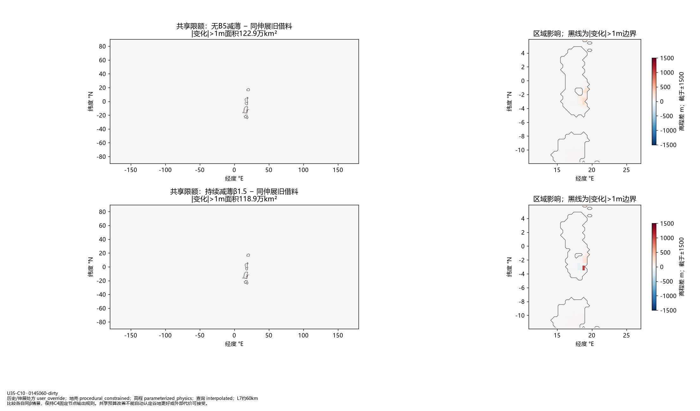

U35-C10：共享供体预算与B5地貌对照
两个隔离候选，仅增加供体总余额限额；β、历史、几何不调。限额缺额仍显式新增，不称为真实沉积或完整质量守恒。未采用候选。
61_shared_budget_constraints.png

62_B5_budget_candidates.png

63_B5_cross_and_long_sections.png

64_B5_budget_history.png

65_B5_budget_global_cost.png

baseline完整标准图组
progressive完整标准图组